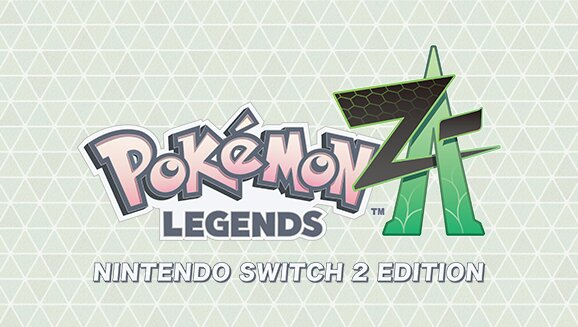

Pokémon Legends: Z-A – Nintendo Switch 2 Edition
será lançado ainda este ano com resolução
e taxas
de quadros aprimoradas no Nintendo Switch 2
Posted on April 2, 2025 by Blogger 
😍 Suporte Pokemon Blog! 😍
Pokémon Legends: Z-A – Nintendo Switch 2 Edition has been revealed for
Nintendo Switch 2.
Read on below to learn more:
Pokémon Legends: Z-A, which is scheduled to launch later this year,
will not only receive a
Nintendo
Switch version, but a Nintendo Switch 2
Edition as well.
By taking advantage of the upgraded hardware, br you can enjoy
your adventure in Lumiose
City
with
enhanced resolution and frame rates
on Switch 2.